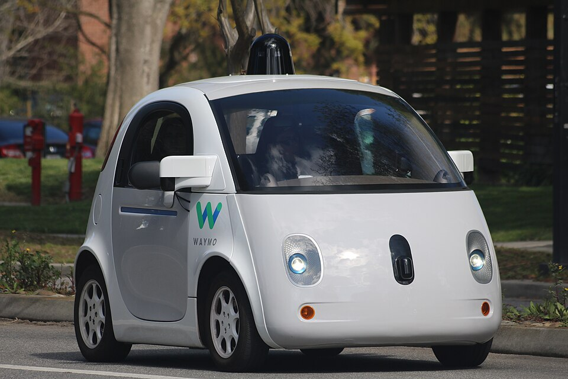

Sci-Fi Labs · Essay
Thoughts on Skill Erosion
The more autonomy the machines have, the less we have. In a way we're giving away our freedom.
Skill erosion is the quiet loss of a capability you once had — not through forgetting, but through never needing it, until the day you do.

There will always be rebels. Mustang drivers. People in old-school cars who refuse the Cybercab and keep both hands on a wheel.
No pedals or a steering wheel
Self-driving took a long time for society to accept, even though the technology was already there. Google had cars driving public roads by 2010. A safety driver was still in the seat. The hard part was never the demo. It was getting people to let go. Not having a wheel means letting go of control — no pedals, no steering wheel. That's been the big challenge. Waymo already did that in 2014. Tesla is now taking the same concept to scale.
Google started in 2009 under Sebastian Thrun, a Stanford professor whose driverless car had already won DARPA's desert race. By October 2010 he had 140,000 miles on public roads — Mountain View to Santa Monica, Lombard, the Golden Gate, Tahoe — with a person still in the seat.1 Nevada licensed it in 2012.2

They even built the no-wheel car. Firefly, 2014. Google designed it from scratch as a two-seater with no steering wheel, no pedals, and a button to start. You sat. They planned about a hundred of them, capped at 25 miles an hour. Early test cars kept manual controls for California law.3 On October 20, 2015, Steve Mahan — legally blind — rode one through an Austin neighborhood on public roads.4
A decade after Mahan's ride, Waymo came back to Austin. On March 4, 2025, they opened to the public: Jaguar I-PACEs on Uber, 37 square miles, still with a steering wheel.5 People wanted in. You could opt in. You could not order a Waymo on purpose. Watching one arrive is a kind of magic. No driver. It pulls up and you get in the back. Then it takes off. The wheel turns by itself. Fear, excitement. The future is here.6 On September 3, 2026, Tesla staged the Cybercab launch in Austin. Public rides opened the next day. Same streets. No driver, and no wheel to watch.78

You need to trust it in order to let go
It took all that time for them to get people comfortable with letting go, and now the technology is reliable. You need to trust it in order to let go. Those are all deep human things in psychology. It took decades to convince people to let go of the wheel. But now that's happening.
This is a social experiment at city scale. Not a lab. Phoenix, San Francisco, Los Angeles, Austin. Get a population comfortable enough to let go of the wheel, then take the wheel out.
The companies know. Waymo's pitch is trust — they call the software the world's most trusted driver. They hire human-factors engineers, UX researchers, ethnographers. The job is to make the empty seat feel normal. The video that tells you not to touch the wheel, the Uber toggle, the early-rider waitlist — that's not the car. That's getting people to surrender control.
They did not ask for the last step first. They sold the surrender in pieces.
Cruise control came in 1958. Chrysler called it Auto-Pilot. A blind engineer, Ralph Teetor, built it because his driver would speed up and slow down with the conversation.9 You took your foot off the gas. Hands on the wheel. Eyes on the road. The car only kept a number.
Adaptive cruise arrived in the 1990s. Mitsubishi in 1995. Mercedes Distronic in 1999. Now the car watched the gap and touched the brakes.10 Your right foot had less and less to do. You were still driving. You had just given away the pedal.
Then the lane. Tesla shipped Autopilot in October 2015: adaptive cruise plus steer to hold the lane.11 GM Super Cruise followed, hands-free on mapped highways, a camera on your face. The industry name was Level 2. The marketing name was whatever sounded finished. Autopilot. Full Self-Driving. You were still the backup. The car was borrowing your attention and training you not to use your hands.
Each step left a ritual of control in the seat. Foot, then hands, then eyes. The leftover ritual was the point. It let you tell yourself you had not let go. Bainbridge's operator, watching a process he no longer ran.
Robotaxi is the next cut. Waymo in Austin still has a wheel. You sit in the back and watch it turn. Nothing for you to grab unless you climb forward. The empty driver seat is the lesson. The wheel is a prop so the cabin does not feel like a box.
Cybercab removes the prop. No pedals. No wheel. The ladder is done. Foot, hands, eyes, then the hardware that made those things possible. You do not get that last step on day one. You get it after your parents spent decades on cruise, after you spent years in a car that nagged you to touch the wheel, after a city learned that a Jaguar can pull up with nobody in it.
That is the psychology. Not a keynote. A sequence. Make each loss feel like a feature. Make the next loss feel small. By the time there is nothing to hold, holding on is the thing that feels strange.
They didn't rip the wheel out first. Cruise control. Adaptive cruise. Autopilot. A robotaxi that still has a wheel you can watch. Then the Cybercab. Each step made the next one feel small.
-
1958Cruise control
-
2009Google project starts
-
2014Firefly: no wheel
-
2015Mahan · Autopilot
-
2025Waymo on Uber, Austin
-
2026Cybercab public · Sept 4
Lisanne Bainbridge was a cognitive psychologist at University College London. She studied operators in factories, process plants, and cockpits. In 1983 she published a short paper, Ironies of Automation. Human factors is the engineering name for how people actually behave around machines. She was watching operators whose only job was to monitor a process they no longer ran, and to take over when the automation failed. What she found: the more you automate, the more that leftover person matters — and the worse they get at taking over.12
The irony: you build a system to get rid of the human, and the leftover human — now the only backup — can no longer do the job. Watching is not practice. Gain and timing — how hard to push, when — go first. The operator who used to be good is a beginner the day they have to take over. The plants in 1983 still had people who had done it by hand. The machines were borrowing those old skills. Later operators never had them. Skill dies when you stop using it.
In a car, taking the wheel out is that last step. There is no take-over. A 2022 study described that car to people. They called it less safe than one that still had a wheel — even after they saw the numbers. They weren't missing data. They were missing control, and that made them anxious.13
You let go because the cabin feels safe. You stop practicing. The next kid never had the skill to lose. You cannot buy it back.
If the robotaxis work
The next few generations could be the first not to know how to drive. If the robotaxis work, driving becomes optional, then rare, then a hobby.
In 1983, 46% of U.S. 16-year-olds had a license. By 2014 it was 24.5%. By 2022, about a quarter.1314 Uber, cost, cities, phones. A Cybercab with no wheel makes not-driving the product, not a delay.
If the Cybercabs work, driving becomes optional, then rare, then a hobby. Except the rebels in the Mustangs.
What do you do if the car takes you to jail and there's no wheel to turn? If your kids never learn to drive, can they ever travel without asking a machine? What happens when the geofence ends and the dirt road starts? When the power is out and the app is dead?
Sources
- Google Official Blog — What we’re driving at (Sebastian Thrun, 9 Oct 2010)
- BBC — Google gets Nevada driving licence for self-drive car (8 May 2012)
- Google — Just press go: designing a self-driving vehicle (Chris Urmson, 27 May 2014)
- Waymo — The journey of our Firefly (Mahan ride 20 Oct 2015)
- The Verge — Waymo is now available exclusively on Uber in Austin (4 Mar 2025)
- Axios Austin — What it's like to ride in a self-driving car in Austin (4 Mar 2025)
- AP — Tesla launches steering-wheel-free Cybercabs in Austin (3 Sep 2026)
- Reuters — Tesla starts Cybercab rides in Austin (3–4 Sep 2026)
- Smithsonian — The Sightless Visionary Who Invented Cruise Control (Ralph Teetor; Chrysler Auto-Pilot, 1958)
- Autonomous Vehicle International — The history of adaptive cruise control (Mitsubishi 1995; Mercedes Distronic 1999)
- Tesla — Your Autopilot has arrived (v7.0, 15 Oct 2015)
- Lee, Y. J. & Park, J. — The Safety Paradox of Self-Driving Cars, 2022
- Sivak, M. & Schoettle, B. — Recent Decreases in the Proportion of Persons with a Driver’s License, UMTRI-2016-4 (FHWA: 16-year-olds 46.2% in 1983, 24.5% in 2014)
- Fortune — Gen Z is ditching driver’s licenses for Uber (~25% of 16-year-olds licensed in 2022)
- Bainbridge, L. — Ironies of Automation, Automatica 19(6), 1983